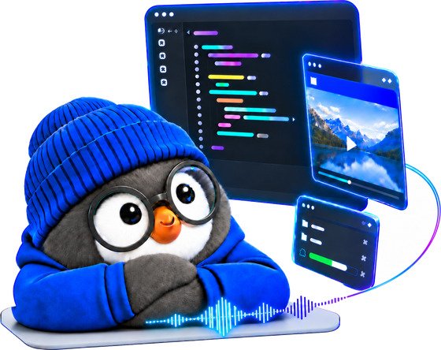

τ-Voice · same front model
187/278
tasks solved on Venus-Audio when only the harness changes. Qwen Audio Agent solves 29.

A slow-brain harness for full-duplex voice agents. Users keep talking while the work runs in the background; Jarvis turns every turn into a typed operation on a versioned task, checks it against the current state before it acts, and counts an answer as delivered only once the user has heard it.
Jarvis Team
Demos
Seven recorded sessions. In five, Jarvis-Audio runs on a full-duplex speech model: it keeps the conversation going while games, lookups and code answers run in the background, or plays a game alongside the user. In two, Jarvis-Omni also watches the screen and coaches a player through CS2 and League of Legends. The Mandarin sessions have English subtitles under the video; pick a chapter to jump to the moment that matters.
τ-Voice · same front model
187/278
tasks solved on Venus-Audio when only the harness changes. Qwen Audio Agent solves 29.
Full-Duplex-Bench v3
69%
Pass@1 for Jarvis-Audio, ahead of GPT-Realtime at 60% and 21 points above the model it runs on.
τ-Voice public leaderboard
69.2%
macro task success, higher than every realtime speech model on the board, with an open 9B front model.
Scripted races
240/240
runs consistent under refinements, cancellations and interruptions: no stale audio, no stale tool effect, no false delivery.
Decision brain
91%
of JEV decisions are correct and confident within one second. General LLM controllers manage 0%.
Jarvis-Omni
+22.7pp
correct answers come from the screen, and advice whose visual evidence has expired is never spoken.
Overview
Full-duplex speech models can listen and talk at the same time, and voice agents increasingly pair them with a stronger model that works in the background. This split gives an agent room to think, but it raises a problem that neither model solves on its own. The conversation does not wait for the work. Users refine a request, cancel it or ask something new while tasks are still running, and results come back after the request behind them has changed.
Jarvis is a slow-brain harness that gives this coordination a brain of its own. A small adapter on the front model's own control tokens decides when a turn should go to the slow brain. JEV, a judgment model that answers typed questions instead of writing free text, then decides what the turn means for the work in flight. It chooses among concrete operations that the runtime reads off the Task Ledger, a versioned record of every request, such as refining the second version of a game. Every choice is therefore executable, and a choice made against an outdated version is simply rejected. An answer counts as delivered only when playback receipts show that the user heard it, and a gated memory keeps lasting facts apart from passing remarks.
Jarvis-Audio runs on full-duplex speech models, and Jarvis-Omni runs on an audio-visual model and treats what it sees as evidence that expires. With the front model held fixed, replacing Qwen Audio Agent with Jarvis raises τ-Voice task success from 29 to 187 of 278 tasks, and Jarvis-Audio reaches 69% Pass@1 on Full-Duplex-Bench v3, ahead of GPT-Realtime at 60%.
The problem
These are not recognition errors and not reasoning errors. They happen because two processes move at different speeds and nothing keeps them in step. The first five arise with audio alone; the sixth appears once the agent can see.
The first draft of a game is presented after the user has already asked for a light theme.
Prevented by Task Ledger versions“Make it sixty dollars” changes the game instead of the snack plan.
Prevented by JEV over version-bound optionsA plan formed before the user corrected the order number is executed anyway.
Prevented by Freshness check on the planThe user cuts an answer off halfway, yet the task is recorded as delivered.
Prevented by Playback receipts and epochs“Only sixty tonight” overwrites the usual budget of forty.
Prevented by Gated memory writesAdvice to push forward arrives after the teammate on screen has died.
Prevented by Belief State validity windowsAll six share one cause: the system acts on a picture of the conversation that has stopped being true. Jarvis makes the current state explicit and checks every action against it.
How it works
The fast brain keeps the conversation going and decides when to hand a turn over. The slow brain interprets the turn with JEV, records the work in the Task Ledger, runs it in the background and returns the answer in the fast brain's own voice, but only while the result is still valid. The two never wait for each other.
The front model already speaks well. Only the decision of when to involve the slow brain is trained, on the model's own control tokens; every weight that produces speech stays frozen.
Questions that need understanding go to a model, but the model answers by choosing among operations the runtime prepared. The runtime then applies the choice and checks it against the current state.
Plans, results, playback and visual facts all carry a version, an epoch or a timestamp, and each is checked again before it may act or speak.
A worker finishing a task and the user hearing the answer are two separate events, and the system records them separately.
Five modules, one per tab
“Build me a little game for tonight” needs the slow brain, “tell me a joke” does not, and “hold on, let me ask my roommate” is not addressed to the assistant at all. The decision has to be made from audio while the user may still be talking, and the words alone cannot tell a finished request from a pause. The front model already knows, because it is the part that decides when to speak.
So for every one-second audio unit the gate reads a three-way policy, LISTEN, DIRECT or DELEGATE, straight off the front model's native control tokens, and acts only once a branch reaches 0.8. It is a rank-8 LoRA trained with GRPO on the branch, not on a token, and it is switched on only in the routing pass, so the voice you hear comes from exactly the released weights.
Midway through game night the user says “make it sixty dollars”. The game is on its third version, the snack plan is running and the weather has just been played. Understanding the sentence needs a model; acting on it changes real tasks, so the model must never produce an operation the runtime cannot check.
JEV never composes an instruction. The runtime writes the options from the live Task Ledger, and every option names a task and a version, so whatever JEV picks is executable by construction. Below a confidence of 0.8 the runtime does not guess: a worker takes the turn with full context and every existing task stays as it was.
Request
Typed answer
p(REFINE:T5:1) ≥ 0.8, so the runtime supersedes version 1 of the snack plan and starts version 2 with the one-night budget. The game is not touched. Probabilities are illustrative, as in the report's Figure 4.
The ledger is the one place where Jarvis records what the user asked for and what happened to it. Every task has a version. “Use a light theme” turns version 3 of the game into version 4, and version 3 moves to SUPERSEDED. Four invariants rule out the stale, ghost and lost failures:
Suppose the weather report starts playing and the user cuts in after three words to change the game. If the system marks the weather as delivered, the user never hears it and the assistant believes it has answered. Delivery keeps the two events apart.
Every time playback is cleared, the runtime opens a new generation epoch, and audio from an older epoch is dropped on arrival. The client reports what it actually played as receipts, and only a complete receipt in the current epoch moves a task from COMPLETED to DELIVERED. Stopping the voice is not cancelling: the task keeps its result, so the user can ask for it again.
chunk played in fullchunk never played
An assistant people use every day should remember what they tell it, but not everything they say. “I usually spend forty dollars” is worth keeping, “only sixty tonight” is a condition on tonight's task, and “tell him I'll call back” was not said to the assistant at all.
Nothing enters the profile unless JEV agrees, at a threshold of 0.8, that the speaker is stating a lasting fact about themselves. Conditions that belong to a task stay on the task, only an explicit correction can replace a saved record, and the assistant says something is saved only after the write is confirmed.
“For tonight, only sixty dollars is fine. Keep forty as my usual limit.”
One session, decision by decision
A recorded five-minute session from the report. In one breath the user asks for a browser game, tonight's weather in Shanghai and two technology headlines, then keeps talking while up to four tasks run. Every utterance becomes one or more typed operations, and every operation names a live task version. Hover an utterance to find it on the timeline; press play to hear it in the Game night demo.
Results
Three questions. Does the harness by itself make a voice agent better, with everything else held fixed? How does it compare with the strongest published voice systems? And why does it work, mechanism by mechanism?
Each pair keeps the front model, the admission path and the DeepSeek-V4-Flash back end fixed and swaps Qwen Audio Agent (QAA) for Jarvis, so every difference comes from what happens to a turn after it is admitted. Jarvis never trails QAA on any benchmark, domain or task category.
| Front model | Harness | τ-Voice (solved) | FDB-v3 | FDB-v2 | ||||
|---|---|---|---|---|---|---|---|---|
| Airline | Retail | Telecom | Total | Exact | Semantic | Task score | ||
| Venus-Audio | Native harness | 17† | 6† | 0† | 23† | 0 | 0 | 3.09 |
| QAA | 23 | 6 | 0 | 29 | 41 | 59 | 2.57 | |
| Jarvis | 35 | 77 | 75 | 187 | 51 | 63 | 3.36 | |
| MiniCPM-o 4.5 | QAA | 23 | 6 | 0 | 29 | 40 | 56 | 2.98 |
| Jarvis | 23 | 6 | 9 | 38 | 50 | 63 | 3.28 | |
| VoiceChat-11B | QAA | 1 | 1 | 0 | 2 | 26 | 38 | 2.44 |
| Jarvis | 23 | 6 | 4 | 33 | 34 | 50 | 2.84 | |
| Other full-duplex systems with their own runtimes | ||||||||
| MoshiRAG | Native retrieval | 0 | 0 | 0 | 0 | 0 | 0 | 3.08 |
| Gander | Native runtime‡ | 23 | 6 | 0 | 29 | 5 | 6 | 3.16 |
τ-Voice reports solved tasks out of 278, FDB-v3 passes out of 100 under exact and semantic matching, and FDB-v2 the mean task score over 300 task and pace pairs. All rows share one judge. †Earlier protocol, counted over the 42, 111 and 104 episodes that completed. ‡Released runtime with a DeepSeek-V4-Flash worker in place of its Codex back end.
Jarvis-Audio reaches 69% Pass@1 on Full-Duplex-Bench v3, nine points above GPT-Realtime and 21 above the Venus-Audio model it runs on, and the margin grows with difficulty: on hard scenarios it passes 56.7% against 43.3%. On the public τ-Voice leaderboard it beats every realtime speech model. The two systems above it follow the same fast-and-slow design on proprietary frontier back ends; Jarvis gets close with an open 9B front model and a flash-tier back end.
realtime front end with a proprietary reasoning back end
| System | Tool F1 ↑ | Arg. acc. ↑ | Resp. qual. ↑ | Pass@1 ↑ | Take-turn ↑ | Interrupt ↓ | Filler ↓ |
|---|---|---|---|---|---|---|---|
| Commercial and cascaded systems | |||||||
| GPT-Realtime | 0.876 | 0.680 | 0.792 | 0.600 | 96.0 | 13.5 | 16.9 |
| Gemini Live 3.1 | 0.817 | 0.588 | 0.718 | 0.540 | 78.0 | 19.2 | 31.7 |
| Gemini Live 2.5 | 0.786 | 0.593 | 0.554 | 0.490 | 92.0 | 14.1 | 8.9 |
| Cascaded (Whisper, GPT-4o, TTS) | 0.803 | 0.562 | 0.600 | 0.450 | 100.0 | 33.0 | 26.9 |
| Grok | 0.797 | 0.542 | 0.617 | 0.430 | 94.0 | 25.5 | 44.3 |
| Ultravox v0.7 | 0.794 | 0.513 | 0.510 | 0.410 | 96.0 | 47.9 | 88.0 |
| Open full-duplex models and agents | |||||||
| Venus-Audio | 0.850 | 0.542 | – | 0.480 | – | – | – |
| Venus-Omni | 0.860 | 0.531 | – | 0.430 | – | – | – |
| VoiceChat-11B | 0.825 | 0.422 | – | 0.330 | – | – | – |
| Gander | 0.759 | 0.503 | 0.490 | 0.400 | 100.0 | 8.0 | 51.6 |
| Jarvis-Audio | 0.927 | 0.783 | 0.850 | 0.690 | 100.0 | 7.0 | 20.4 |
The first four metrics are fractions and the last three are percentages. Baseline numbers come from the benchmark release, the Realtime-Venus report and the Gander report. Bold marks the best value in each column, and – means not reported.
| System | Retail ↑ | Airline ↑ | Telecom ↑ | Macro avg. ↑ |
|---|---|---|---|---|
| Realtime speech models | ||||
| GPT-Realtime 1.0 | 35.96 | 36.00 | 19.30 | 30.42 |
| GPT-Realtime 1.5 | 44.70 | 40.00 | 21.10 | 35.27 |
| GPT-Realtime 2 | 47.37 | 58.00 | 21.93 | 42.43 |
| Gemini 2.5 Flash Live | 29.80 | 30.00 | 17.50 | 25.77 |
| Gemini 3.1 Flash Live (thinking high) | 45.61 | 64.00 | 21.93 | 43.85 |
| Grok Voice Fast 1.0 | 38.60 | 36.00 | 40.40 | 38.33 |
| Grok Voice Think Fast 1.0 | 62.28 | 66.00 | 73.68 | 67.32 |
| Grok Voice Think Fast 2.0 | 59.65 | 56.00 | 71.93 | 62.53 |
| Qwen3.5-Omni-Plus Realtime | 46.49 | 54.00 | 60.53 | 53.67 |
| Cascaded pipeline | ||||
| LiveKit (Nova-3, GPT-4.1, Aura) | 28.95 | 48.00 | 16.67 | 31.20 |
| Realtime front end with a proprietary reasoning back end | ||||
| GPT Live 1 with GPT-6 Astra | 78.95 | 82.00 | 84.21 | 81.72 |
| Pine Voice Preview | 70.18 | 70.00 | 85.96 | 75.38 |
| Jarvis-Audio (open 9B front, DeepSeek-V4-Flash) | 67.54 | 70.00 | 70.18 | 69.24 |
Task success in percent on the regular tasks. Other systems are the standard voice submissions on the public leaderboard. Bold marks the best value among systems without a proprietary reasoning back end.
A benchmark caller rarely changes a request while the work on it is still running, so the mechanisms are tested directly: scripted races against the real runtime, decision timing against general LLM controllers, and spoken memory.
Task Ledger checks
80 race scripts inject a refinement, a cancellation, a correction during planning, a task switch or an interruption during playback, three runs each against the real runtime.
Decision brain
Same options and context for all three controllers; 192 bilingual test cases, each called three times, then replayed in the runtime.
Memory
80 fixed questions about 20 ContextDialog conversations, fed as real audio, scoring the answer that was actually played (1 to 5).
| Runtime | Consistent runs ↑ | Stale audio ↓ | Stale tool effect ↓ | False delivery ↓ | Gain of full runtime (pp) |
|---|---|---|---|---|---|
| Jarvis, full runtime | 240 / 240 | 0 | 0 | 0 | – |
| without result validity (I2) | 168 / 240 | 72 | 0 | 0 | +30.0 [15.0, 45.0] |
| without plan freshness (I3) | 168 / 240 | 72 | 72 | 0 | +30.0 [15.0, 45.0] |
| without playback receipts (I4) | 204 / 240 | 0 | 0 | 36 | +15.0 [3.8, 30.0] |
| Controller | Threshold | Median request (s) ↓ | In time, 1 s ↑ | With fallback, 3.5 s ↑ | Correct binding ↑ | Stopped in time ↑ | Replays with stale audio ↓ | Unchanged tasks kept ↑ |
|---|---|---|---|---|---|---|---|---|
| DeepSeek-V4-Flash | 0.95 | 1.57 | 0 / 576 | 465 / 576 (80.7%) | 220 / 256 | 77 / 224 | 36 | 32 / 32 |
| Gemini 3.5 Flash | 1.00 | 3.14 | 0 / 576 | 456 / 576 (79.2%) | 160 / 256 | 9 / 224 | 96 | 32 / 32 |
| JEV | 0.43 | 0.30 | 524 / 576 (91.0%) | 544 / 576 (94.4%) | 252 / 256 | 150 / 224 | 4 | 32 / 32 |
| Harness and memory | Mean score ↑ | Score ≥ 4 ↑ | Evidence tokens |
|---|---|---|---|
| QAA, default Markdown memory with automatic injection | 1.45 | 6 / 80 | 55 |
| Jarvis, JEV selection | 4.19 | 61 / 80 | 700 |
| Jarvis, hybrid dense and sparse retrieval | 4.41 | 65 / 80 | 1013 |
Jarvis-Omni
In audio, the facts behind a decision are mostly in the user's words, and words do not change after they are spoken. On a screen, facts change on their own: a teammate who was alive two seconds ago is dead, and a low health bar is full again after a recall. Jarvis-Omni treats visual facts the way Jarvis-Audio treats tasks, as state with a version and a lifetime, and checks them again before anything based on them reaches the user.
Removing only the screen frames that enter the runtime, in two independent cohorts of recorded game sessions.
Silent controls stay silent either way: 60 / 60 and 24 / 24. An audit of 787 model inputs found no frame from the future of its decision.
Admitted answers played through the real speech scheduler and browser player, with their evidence set to expire. Expired audio in milliseconds, four replays each.
0.125 ms is three audio samples. Utterances whose evidence stays valid play in full either way.
The gate combines microphone and screen features with the dialogue so far, and adds a SCENE action to speak up unprompted. Fixed test set of 96 episodes.
correctmissed actionacted early or in the wrong branch
In paired live sessions, requests whose first answer never reached the speaker fall from 7 to 2 out of 18.
| Jarvis-Audio | Jarvis-Omni | |
|---|---|---|
| Front model | Realtime-Venus-Audio, 9B | Venus-Omni |
| Native Gate | Causal audio prefixes, three actions | Causal audio and screen features with dialogue context, plus a SCENE action for proactive turns |
| Decision brain | JEV, text | JEV-Omni, 12B, text and images |
| Perception state | ASR observer | ASR observer, Evidence Timeline and Belief State |
| Memory | Profile and task records | Adds in-match events and game knowledge |
| Shared: JEV controller, Task Ledger, workers, Delivery and playback control | ||
| Main evidence | τ-Voice, Full-Duplex-Bench v2 and v3, ContextDialog, race and control studies, daily use, PvZ, Luanti | Gate test set, visual and playback ablations, live CS2 and League of Legends sessions |
Citation
Citation details will be posted here once the technical report is available.